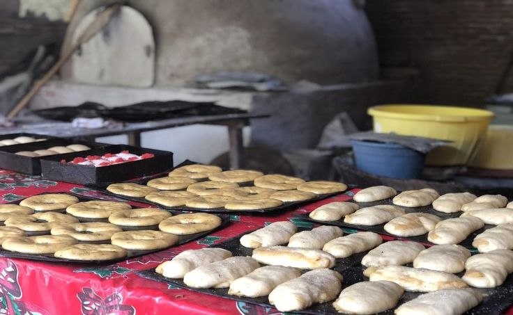

01 · Lugares
Nuestros espacios
Lugares donde convivimos y compartimos.
Descubre los paisajes, las costumbres, los sabores y los lugares que hacen especial a nuestra comunidad. Cada fotografía cuenta una parte de nuestra historia.
Explorar galeríaEsta galería reúne imágenes de los lugares que habitamos, las tradiciones que compartimos y la riqueza natural y cultural de nuestra localidad. Conocerla es una forma de valorar nuestra identidad y conservar nuestro patrimonio.
Una mirada a lo que nos hace únicos.
Lugares donde convivimos y compartimos.

La belleza de nuestro entorno.

Costumbres que pasan de generación en generación.

Recetas y sabores de nuestra comunidad.

Personas que dan vida a la localidad.

Espacios que conservan nuestra memoria.
Videos para descubrir los paisajes, las actividades y las historias que distinguen a nuestra comunidad.
Descubre algunos de nuestros lugares favoritos.
Conoce las costumbres de nuestra comunidad.
CECyMagic invita a estudiantes y habitantes a compartir fotografías, recuerdos e historias para preservar la identidad cultural de nuestras comunidades.
Comparte tu historia